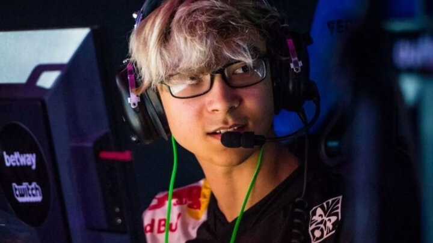

TenZ to remain with Sentinels until end of Challengers Finals
Sentinels, one of the best North American VALORANT teams, has confirmed that Tyson “TenZ” Ngo will remain a part of their roster.
The future of TenZ within VALORANT has been a big debate for quite a while, with a lot of rumors flying around. Now Sentinels have come out themselves and confirmed he’ll keep playing for them for a while longer, at least remaining with them until the end of Challengers Finals. “We are pleased to announce that TenZ will be competing with Sentinels through the end of the Challengers Finals.”
TenZ has been a huge part in the recent success of Sentinels, where he took over for Jay “Sinatraa” Won who was suspended following allegations of abuse. With TenZ in their roster, Sentinels was able to win the Stage 1 Masters, taking down top contenders in the form of 100 Thieves, Luminosity and FaZe Clan along the wa
It would seem like the loan from Cloud9 has been extended, as TenZ hasn’t joined up with Sentinels as a permanent member as of yet. Something that has been confirmed by C9 CEO Jack Etienne as well, while he also shut down the rumors of a $5 million buyout being put on TenZ. In any case, if Sentinels does want to add TenZ to their roster permanently they will have to pay a buyout. Even though it might not be the $5 million, he’ll certainly cost a heavy penny.